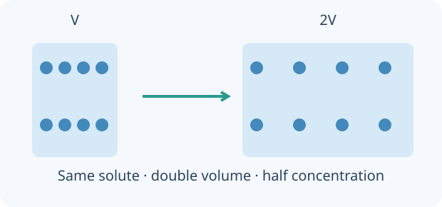

Acids and Bases
Colour changes, reactions and careful measurements: explain what acids and bases do, then use evidence to find an unknown concentration.

Build the idea, one step at a time.
In this aqueous course, acids are described through production of H₃O⁺, often abbreviated H⁺, while soluble hydroxide bases provide OH⁻. A base need not be a soluble hydroxide. Indicators provide evidence about a solution under specified conditions; their colour is a measurement clue, not a complete description of every chemical present.
Strength concerns how far an acid or base ionises or reacts with water; concentration concerns how much was added per quantity of solution. Neutralisation compares reacting amounts, so begin with the balanced equation before comparing volumes. pH is logarithmic, and an indicator endpoint is an observed range rather than an exact definition of equivalence.

01 · Indicators and the pH scale
At 25°C, neutral pure water has pH 7. Universal indicator estimates a broad pH range; a single indicator changes over its own transition range. Natural red-cabbage colours vary with the extract and conditions.
02 · Strength, concentration and dilution
A strong acid ionises essentially completely in dilute aqueous solution; a weak acid establishes an equilibrium. Concentration is amount per volume. A concentrated weak acid and a dilute strong acid cannot be ranked by the words strong and weak alone.
03 · Mass concentration, molarity and ppm
Molar concentration is n/V in mol/L. Mass concentration can be mg/L. For dilute water-based solutions of density near 1 kg/L, mg/L is approximately ppm by mass. Do not interchange ppm and mol/L without mass and molar-mass information.
04 · Neutralisation and ionic equations
Acid + alkali gives salt and water. For a strong-acid / strong-alkali aqueous reaction, H⁺ + OH⁻ → H₂O removes the reacting ions and leaves spectators. Other bases such as oxides and carbonates need their own balanced equations.
05 · Name the salt from the acid and cation
Hydrochloric acid forms chlorides, nitric acid forms nitrates and sulfuric acid forms sulfates. The metal or ammonium ion supplies the first part of the salt name. Balance charges when writing the formula.
06 · Acid + metal or carbonate
A metal above hydrogen can release H₂ from a suitable dilute non-oxidising acid. Carbonates give a salt, CO₂ and water. Acid identity and reaction conditions matter: copper does not produce H₂ from dilute HCl.
07 · Solubility and salt preparation
All common nitrates and Group 1 / ammonium salts are soluble. Most chlorides are soluble, with important exceptions such as AgCl and PbCl₂; BaSO₄ and PbSO₄ are insoluble, while CaSO₄ is sparingly soluble. Most carbonates are insoluble except Group 1 and ammonium carbonates.
08 · Vinegar, Epsom salts and everyday chemistry
A vinegar titre gives the concentration in the sample actually titrated; apply any stated dilution factor afterwards. Epsom salt is MgSO₄·7H₂O. Baking powder contains acid salts and bicarbonate; cream of tartar is an acid salt. Soap stabilises oil droplets by amphiphilic ions.
You can read these explanations without operating the simulator. The practical activities, games and revision below let you apply the ideas and check your reasoning.
Now investigate →Choose an investigation
Make a prediction, choose the conditions and use the apparatus on the bench. Drag equipment into place, turn switches and watch the reaction. Need a hand? Use Help with this step. Record your evidence before answering the explanation question.
Preparing your experiment…
Choose conditions Sample, quantities and equipment
Use the equipment directly on the bench. Drag, click or tap the highlighted apparatus.
Record and compare your observations.
Your notebook stays while you explore this page. Reloading clears it. Practical notes and lesson checks are not sent to the teacher.
Use the evidence
Connect the practical to the chemistry
Indicators and the pH scale
At 25°C, neutral pure water has pH 7. Universal indicator estimates a broad pH range; a single indicator changes over its own transition range. Natural red-cabbage colours vary with the extract and conditions.
Example. An acidic sample may turn methyl orange red and phenolphthalein colourless. Different colours do not mean different sample pH values.
Strength, concentration and dilution
A strong acid ionises essentially completely in dilute aqueous solution; a weak acid establishes an equilibrium. Concentration is amount per volume. A concentrated weak acid and a dilute strong acid cannot be ranked by the words strong and weak alone.
Example. At equal 0.010 mol/L, ideal HCl has pH about 2; ethanoic acid has a higher pH because it is only partially ionised.
Mass concentration, molarity and ppm
Molar concentration is n/V in mol/L. Mass concentration can be mg/L. For dilute water-based solutions of density near 1 kg/L, mg/L is approximately ppm by mass. Do not interchange ppm and mol/L without mass and molar-mass information.
Example. 60 mg in 2 L gives 30 mg/L. Add 1 L of water: the same 60 mg is now in 3 L, giving 20 mg/L, about 20 ppm.
Neutralisation and ionic equations
Acid + alkali gives salt and water. For a strong-acid / strong-alkali aqueous reaction, H⁺ + OH⁻ → H₂O removes the reacting ions and leaves spectators. Other bases such as oxides and carbonates need their own balanced equations.
Example. HCl + NaOH → NaCl + H₂O. Na⁺ and Cl⁻ remain dissolved. Equal volumes reach equivalence here only when the concentrations and stoichiometry match.
Name the salt from the acid and cation
Hydrochloric acid forms chlorides, nitric acid forms nitrates and sulfuric acid forms sulfates. The metal or ammonium ion supplies the first part of the salt name. Balance charges when writing the formula.
Example. H₂SO₄ + 2KOH → K₂SO₄ + 2H₂O. Two K⁺ ions balance one SO₄²⁻ ion.
Acid + metal or carbonate
A metal above hydrogen can release H₂ from a suitable dilute non-oxidising acid. Carbonates give a salt, CO₂ and water. Acid identity and reaction conditions matter: copper does not produce H₂ from dilute HCl.
Example. Mg + 2HCl → MgCl₂ + H₂. CaCO₃ + 2HCl → CaCl₂ + CO₂ + H₂O. Try the gas-syringe comparison in Metals.
Solubility and salt preparation
All common nitrates and Group 1 / ammonium salts are soluble. Most chlorides are soluble, with important exceptions such as AgCl and PbCl₂; BaSO₄ and PbSO₄ are insoluble, while CaSO₄ is sparingly soluble. Most carbonates are insoluble except Group 1 and ammonium carbonates.
Example. To make a soluble salt from an insoluble base: use excess base, filter, concentrate and cool. To make an insoluble salt: mix soluble sources, filter the precipitate, wash and dry it.
Vinegar, Epsom salts and everyday chemistry
A vinegar titre gives the concentration in the sample actually titrated; apply any stated dilution factor afterwards. Epsom salt is MgSO₄·7H₂O. Baking powder contains acid salts and bicarbonate; cream of tartar is an acid salt. Soap stabilises oil droplets by amphiphilic ions.
Example. 25.0 mL of diluted vinegar neutralises 20.0 mL of 0.100 mol/L NaOH. With a 1:1 reaction, c = 0.100 × 20.0 / 25.0 = 0.0800 mol/L.
Continue investigating
These self-contained activities follow the syllabus. Read the explanations, make a prediction and compare your observations. The virtual model provides its own steps and feedback.
Try it. Solve it. Play again.
Reaction Recipe Cards and Neutralisation Drop Quest: move cards, build a model and use feedback to work out the next step.
Ready to test your understanding?
Choose from 80 questions on acids and bases. Tick your areas and levels, practise with explanations or take a Test yourself quiz, then retry the questions you missed.